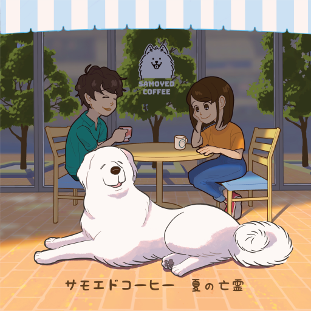

この作品について

- UTsoundsという名義で制作したAIきりたんの2曲入りCD。
- 2021年度M3秋出展作品
- イラストはあじぺた氏
- BoothでDL版の販売があります
歌詞
サモエドコーヒー
「サモエドコーヒー
ほんのり苦い気分ごと
連れてゆくよ サモエドへ
さあおいで」
白黒つかない天気だね
君と僕との間みたいね
色々足りないエブリデイ
犬のマークのカフェを見つけた
コーヒーにはたっぷりミルクと
ブラウンシュガーを加えて
サモエドコーヒー
だけどいるのはピレニーズ
ふわふわだね 曖昧だね
サモエドコーヒー
どうでもよくなるカフェだね
僕らにはね 必要だね
また来るね
ひたすらしがない僕らだね
ほろ苦いこのカフェオレみたいね
あれこれ合わないこの先の
日々の二人は不確かだけど
大きい犬 撫でると喜ぶ
白くて可愛い 間違いでもいい
サモエドコーヒー
疲れた頭にピレニーズ
ふわふわだね 最高だね
サモエドコーヒー
やわらかな白いカフェだね
僕らにはね 必要だね
またくるね
サモエドコーヒー
だけれど（ピレニーズ）
サモエドコーヒー
だけれど（ピレニーズ）
夏の亡霊
少しだけ笑って見えた秘密のダンスと
口々に囃し立てる不在のカースト
無色透明な君のことだよ
一緒になって泳いだ檻の中
今でも夏とその亡霊に
通り過ぎた日を掴まれて
近く煌めいた透明に
つい手を竦めたんだ
今でも君のいた光景に
胸の奥の方を掴まれて
遠く滲んだ憧憬に
つい手を伸ばしてしまうんだ
在り来たりを敢えて切る有罪の感情論と
足りないと泣いて喚く有形のPhantomと
無色透明は僕もそうだよ
離れて暮らした檻の中
今でも夏とその亡霊に
通り過ぎた日を掴まれて
近く煌めいた透明に
つい手を竦めたんだ
今でも君といた光景に
胸の奥の方を掴まれて
遠く滲んだ憧憬に
つい手を伸ばしてしまうんだ
さようなら 君といた少年に
語り
M3という大型同人音楽イベントがあって、そのイベントに参加するために急遽作ったCD。 よえみんにそそのかされて、M3参加締め切り一日前に参加を決めました。 当時（今もだけど）、曲作りが遅いことに悩んでいて、締め切りを設けて世に出すことが大事だと強く説得されたという経緯です。 元々締め切りに対して酷く苦手感があり、今回M3で世に出せたことは良かったけど、苦手感が無くなったり、「だからやっぱり締め切りを設けるべきだ」 とは正直思えていない状態。でも出して良かった。 急遽作った割りには一応完成したと言えるクオリティで良かった。
ミキシングはもう少し詰めれたかなと思う。 最終納品前後でヘッドフォンの耳当てを変えたんですけど、そのおかげで色々バランスがくるってしまった部分がありますね。
サモエドコーヒーについて 元々この曲を構想したのは2019年の春ぐらい。 中洲川端のイタリアンレストランにすげぇでかい犬を連れてパスタ食ってるお姉さんがいたのがきっかけです。 あの辺りの川沿いの空気感が寛容さと自由の発想には効いたんじゃないかなと思います。
コミカルさから一種の普遍的価値観を語るというアプローチは地味に結構好きかもしれない。
夏の亡霊について 歌詞だけ先に書いていた曲です。押韻を意識してますね。 実は2018年に別バージョンの詩をイバケンさんに提供して、曲をつけてもらった経緯があります。 今回は自分なりに曲をつけた結果となりますね。 自分では結構気に入った出来になっています。メロディが気に入っています。 スリーピースバンドの少ない音数だからこそ出るエモさみたいなのが出たので良いかなと思いました。
M3では完売しました。きりたんが好きな人か、ジャケ絵が刺さった人が割と多くいたんじゃないかなぁと思っています。